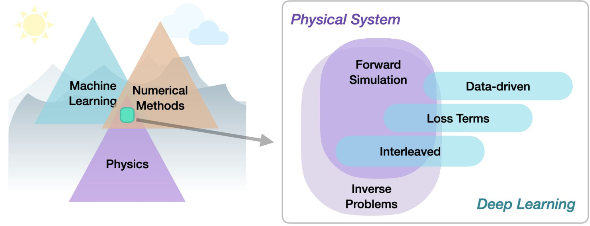
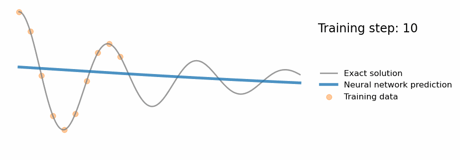
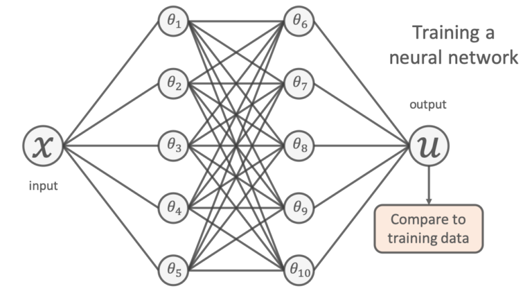
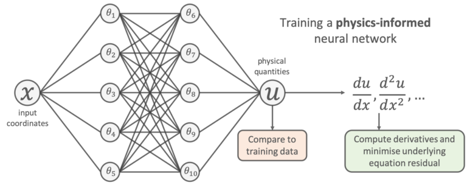
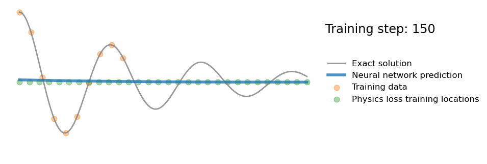
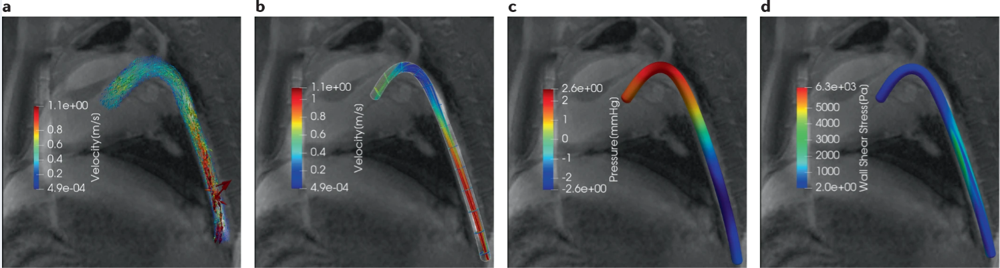
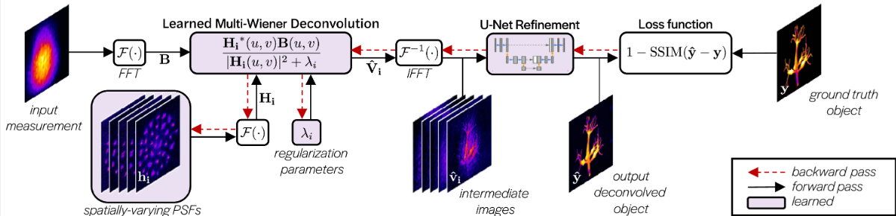
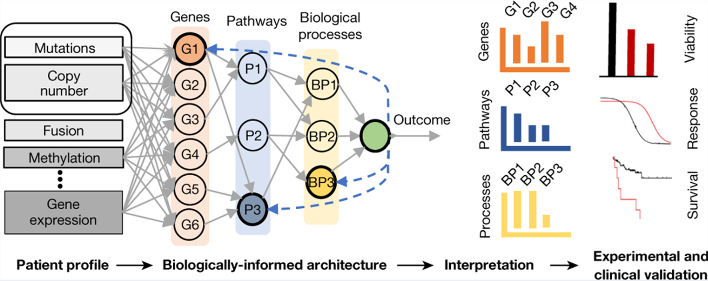
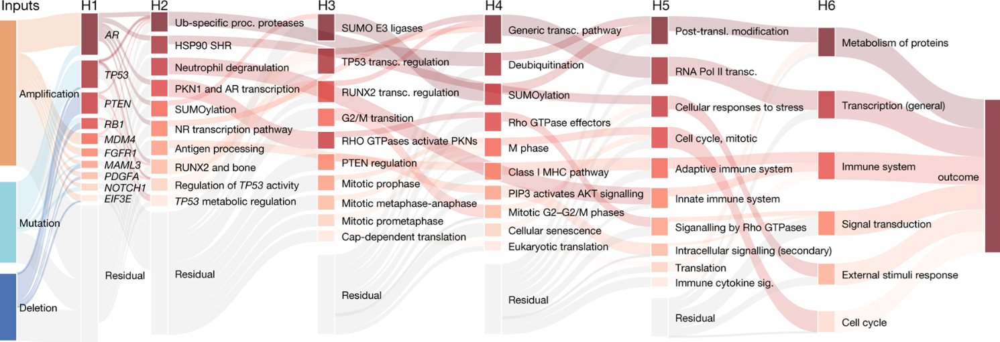

Aprendizaje Profundo Basado en Física#
El Aprendizaje Profundo Basado en Física (PBDL, por sus siglas en inglés) es un campo interdisciplinar que combina el modelado físico con técnicas de aprendizaje profundo para mejorar la precisión y eficiencia de las simulaciones y predicciones en ingeniería e investigación científica. Al incorporar leyes físicas en los modelos de machine learning, el PBDL supera las limitaciones de los enfoques puramente basados en datos, dando lugar a modelos más eficientes en el uso de datos y físicamente consistentes.
Los modelos tradicionales de machine learning son muy efectivos en reconocimiento de patrones y tareas predictivas cuando se dispone de grandes volúmenes de datos. Sin embargo, en muchas aplicaciones de ingeniería, los datos pueden ser escasos, ruidosos o costosos de obtener. Además, los modelos puramente basados en datos suelen fallar al generalizar más allá de los datos de entrenamiento, especialmente cuando carecen de comprensión de los principios físicos subyacentes que rigen el sistema. El PBDL mitiga estos problemas integrando leyes físicas conocidas, típicamente expresadas como ecuaciones en derivadas parciales (PDEs), en el proceso de aprendizaje.

Categorías de Enfoques en PBDL#
Los métodos de PBDL pueden clasificarse de forma general según el grado de integración entre modelos físicos y algoritmos de aprendizaje:
Métodos Basados en Datos: Se apoyan únicamente en datos generados por sistemas físicos, ya sean reales o simulados, sin incorporar explícitamente leyes físicas. Son directos, pero pueden tener problemas de generalización y requieren grandes conjuntos de datos.
Funciones de Pérdida Informadas por Física: Aquí, las leyes físicas se integran en la función de pérdida de la red neuronal. Al calcular los residuos de las ecuaciones diferenciales que gobiernan el sistema e incluirlos en la pérdida, la red aprende soluciones consistentes con la física. Un ejemplo destacado son las Redes Neuronales Informadas por Física (PINNs), aplicadas a problemas directos e inversos que involucran PDEs no lineales.
Métodos Intercalados: Integran estrechamente redes neuronales con simulaciones físicas, a menudo requiriendo simuladores diferenciables. Esta combinación permite modelar con precisión evoluciones temporales y sistemas dinámicos. Los motores de física diferenciables son un ejemplo, ya que integran simulaciones físicas en el entrenamiento, facilitando modelos capaces de predecir el comportamiento futuro de sistemas dinámicos.
Formulación Matemática#
Consideremos un sistema físico gobernado por una PDE:
donde \(u(\mathbf{x}, t) \) representa la variable de estado (ej. temperatura, presión) en la posición \( \mathbf{x} \) y tiempo \( t \), y \( \mathcal{F} \) es el operador diferencial.
En una PINN, aproximamos \(u(\mathbf{x}, t) \) mediante una red neuronal \(u _{\text{NN}}(\mathbf{x}, t; \theta) \) con parámetros \(\theta \). La función de pérdida \(\mathcal{L} \) combina componentes basados en datos y en física:
donde:
\( \mathcal{L}_{\text{data}} = \frac{1}{N} \sum*{i=1}^{N} \left| u _{\text{NN}}(\mathbf{x}*i, t _i; \theta) - u*{\text{true}}(\mathbf{x} _i, t _i) \right|^2 \) mide el error cuadrático medio frente a los datos disponibles.
\( \mathcal{L}_{\text{physics}} = \frac{1}{M} \sum*{j=1}^{M} \left| \mathcal{F}(u _{\text{NN}}(\mathbf{x} _j, t _j; \theta)) \right|^2 \) impone las restricciones de la PDE en puntos de colación.
\( \lambda \) es un hiperparámetro que regula el balance entre datos y restricciones físicas.
Minimizando \(\mathcal{L} \), la red neuronal aprende soluciones que no solo ajustan los datos observados, sino que también cumplen las leyes físicas.
Modelado de Datos Experimentales#
Supongamos que recibimos puntos de datos experimentales de un fenómeno físico desconocido (puntos naranjas en la animación).
La tarea científica común es encontrar un modelo que prediga correctamente nuevas mediciones.

Un enfoque habitual es usar una red neuronal. Dada la localización de un punto de entrada \(x \), la red predice un valor \(u \):

Entrenamos los parámetros libres \(\theta \) para minimizar el error cuadrático medio entre predicciones y datos:
La “ingenuidad” de los enfoques puramente basados en datos#
El problema es que un enfoque solo basado en datos puede fallar al generalizar. Puede ajustarse bien a la vecindad de los datos experimentales, pero fallar lejos de ellos. Esto muestra que el modelo no ha “entendido” realmente el problema científico.
De ahí surge el campo emergente del Aprendizaje Automático Científico (SciML), que busca integrar conocimiento previo en los flujos de machine learning.
Redes Neuronales Informadas por Física (PINNs)#
La idea es simple: añadir directamente las ecuaciones diferenciales conocidas en la función de pérdida durante el entrenamiento.
Esto se hace muestreando ubicaciones de entrada \({x _j} \), pasando por la red, calculando gradientes respecto a la entrada y evaluando los residuos de la ecuación diferencial.

Ejemplo clásico:
La función de pérdida se convierte en:
Así, la “pérdida física” obliga a que la solución aprendida sea consistente con la física conocida.

Ejemplo: Filtrado Physics-Informed en 4D-Flow MRI#
Las PINNs se han aplicado con éxito a datos de resonancia magnética 4D-flow para mejorar diagnósticos cardiovasculares. Al integrar las ecuaciones de Navier–Stokes, estas redes permiten reducir ruido, reconstruir campos de velocidad y presión consistentes con conservación de masa y momento, e identificar marcadores críticos como esfuerzo cortante, energía cinética y disipación.
Persisten retos en condiciones de ruido elevado o flujos complejos (capas límite, turbulencias), pero en contextos fisiológicos (flujos laminares) las PINNs muestran un rendimiento robusto.

Otros Ejemplos#
Deconvolución Espacialmente Variable#
En sistemas de imagen, la deconvolución puede recuperar imágenes nítidas a partir de medidas borrosas. Sin embargo, la función de transferencia varía espacialmente.
El modelo MultiWienerNet combina múltiples filtros de Wiener diferenciables con una CNN para incorporar variaciones espaciales, logrando reconstrucciones rápidas en 2D y 3D. Aunque no se ajusta al marco clásico de PINNs, aprovecha información específica del sistema (PSFs variables) y supera a métodos puramente basados en datos.

Aprendizaje Profundo Biológicamente Informado#
En medicina de precisión, los modelos BINNs (Biologically Informed Neural Networks) integran conocimiento biológico en la arquitectura de las redes. Así, se mejora tanto la interpretabilidad como la capacidad predictiva.
Los BINNs alinean la red con procesos biológicos conocidos, permitiendo identificar proteínas y vías clave en la progresión de enfermedades. En estudios de COVID-19 o daño renal agudo séptico, han permitido diferenciar subfenotipos en base al proteoma, guiando terapias personalizadas.


Retos y Direcciones Futuras#
Aunque el PBDL ofrece grandes ventajas, persisten desafíos:
Complejidad de Entrenamiento: incorporar PDEs genera paisajes de pérdida complejos; se exploran técnicas de ponderación adaptativa y muestreo dinámico.
Escalabilidad: aplicar PBDL a problemas de gran escala requiere algoritmos eficientes y recursos computacionales significativos.
Integración con Métodos Tradicionales: la combinación con elementos finitos u otros métodos numéricos promete modelos más precisos y fiables.